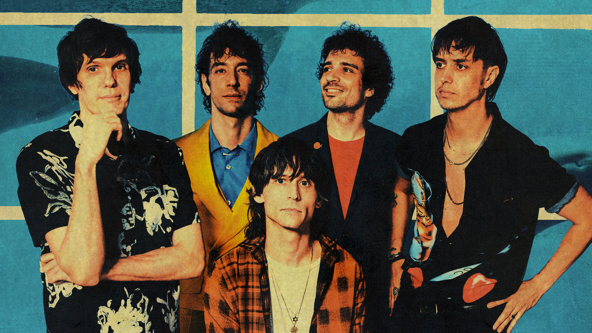

The Strokes fandom page

Sobre ellos
The Strokes es una banda de rock formada en Nueva York en 1998. Su alineación clásica incluye a Julian Casablancas (vocalista), Nick Valensi (guitarra), Albert Hammond Jr. (guitarra), Nikolai Fraiture (bajo) y Fabrizio Moretti (batería). La banda se destacó en la escena musical de principios de los 2000 con su álbum debut "Is This It" (2001), que ayudó a revitalizar el rock de garaje. Con su sonido crudo y melódico, y letras sobre la vida urbana y el desencanto juvenil, se convirtieron en íconos del indie rock. A lo largo de su carrera, han lanzado varios álbumes exitosos y han influido en una nueva generación de bandas de rock.
Hacé click acá y sumá un álbum :)